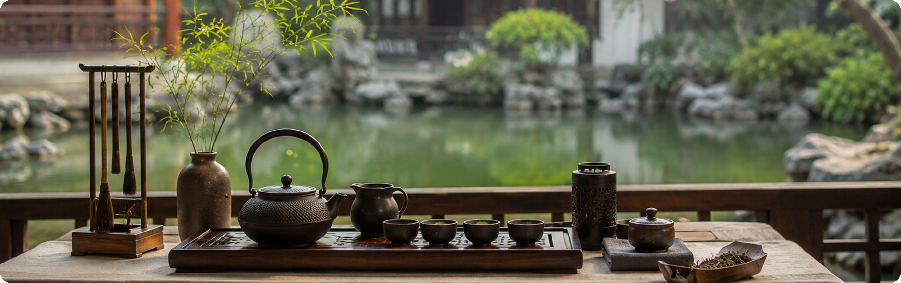
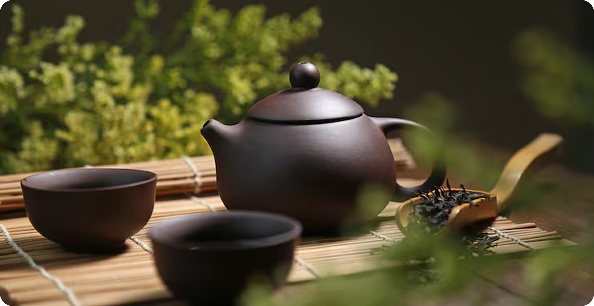
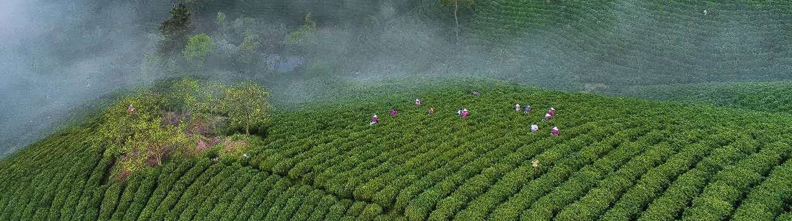

Почему Кудин пьют во время простуды и как избежать горечи при заваривании напитка?
20 ноября 2025

Эксперт в китайском чае

Что получится, если обжарить зёрна ячменя, а затем приготовить из них напиток? Японцы скажут, что это мугича (мугитя), китайцы назовут его дамайча, корейцы — борича, тайваньцы — бехате. Части слов «ча» и «те» указывают на принадлежность к чаю.
Что такое мугича и зачем его готовят

В Японии в период Эдо (XVII–XIX века) мугича действительно назывался ячменным супом, хотя и продолжался считаться чаем. Впрочем, термин «чай» к ячменному настою применять не совсем правильно, ведь по факту это разновидность тизана. В нашей стране отношение к идее заваривать ячмень всегда было весьма неоднозначным.

Эксперт в церемониальном чае
«А все потому, что в СССР мугича переименовали в ячменный кофе, тем самым изменив и категорию напитка, и его назначение как таковое. Настой ячменя в период дефицита должен был, по сути, заменить собой обычный американо, а для русского человека это выглядят как попытка обмана».
Как мугича стал ячменным кофе
Ячменный напиток, конечно, не стал таким изгоем, как в своё время цикорий, но и хорошей репутации не заслужил. В основном его знают как «детский кофе»: этакая альтернатива для тех, кому нельзя кофеин. Такой «кофе» действительно раньше встречался в меню детских садов, но взрослые люди, не отягощённые запретами врачей, ячменный «декаф» обычно не пили.

Технология изготовления ячменного напитка со временем не изменилась: его все так же делают из обжаренных и смолотых зёрен. Однако наиболее распространённой стала быстрорастворимая форма, по аналогии с растворимым кофе. Установить, насколько полезен такой напиток, не так‑то просто, поскольку процесс экстракции все‑таки меняет состав конечного продукта.
Какой на вкус ячменный чай
В зависимости от того, какую форму приготовления вы выберете, вкус тизана будет иметь разные характеристики. Так напиток из экстракта (быстрорастворимый) чаще всего приобретает отчётливо выраженную горчинку, он травянистый и в целом нейтральный.
Если же вы решите, как японцы, сварить мугича на основе зёрен (цельных или дроблёных), напиток получится более нежным и сладковатым. А самый мягкий вкус без оттенков горечи даёт настой из пророщенного ячменя, так называемый бакуга мугича. Заваренный в чашке, он действительно напоминает некрепкий кофе, особенно если добавить в него немного молока и меда.
Ячменный чай, по своей сути и принципу приготовления, очень похож на Ку Цяо — гречишный чай, который тоже готовят из зёрен и заваривают более одного раза. Оставшуюся на дне гущу также можно съесть после чаепития.